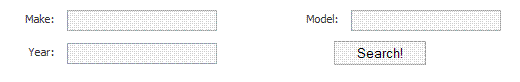
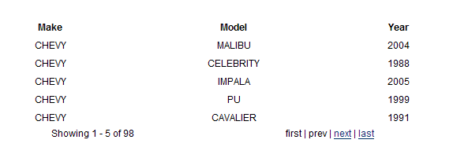

Table of contents
PaginationHelper
The PaginationHelper simplify the creation of paginated navigation on items.
Example
Suppose you have a set with 400 items:
public class MyController : SmartDispatcherController { public void List() { PropertyBag["items"] = ObtainMyLargeCollection(); } private IList ObtainMyLargeCollection() { ... } }
With the PaginationHelper you can return a sliced representation of the collection:
public class MyController : SmartDispatcherController { public void List() { PropertyBag["items"] = PaginationHelper.CreatePagination( ObtainMyLargeCollection(), 10 ); } private IList ObtainMyLargeCollection() { ... } }
The help will look for a page on Request.Params to define its starting index. The CreatePagination method returns a IPaginatedPage object which exposes several properties so you can build a nice pagination box:
- FirstIndex
- CurrentIndex
- LastIndex
- PreviousIndex
- NextIndex
- HasPrevious
- HasNext
- HasFirst
- HasLast
- FirstItem
- LastItem
- TotalItems
NVelocity example
This a snippet that renders the items and the pagination box:
#foreach($row in $items) <tr> <td>$row.Name</td> <td>$row.Email</td> </tr> #end</table> <div class="pagination"> <table width="100%" border="0"> <tr> <td>Showing $items.FirstItem - $items.LastItem of $items.TotalItems</td> <td align="right"> #if($items.HasFirst) $PaginationHelper.CreatePageLink( 1, "first" ) #end #if(!$items.HasFirst) first #end #if($items.HasPrevious) | $PaginationHelper.CreatePageLink( $items.PreviousIndex, "prev" ) #end #if(!$items.HasPrevious) | prev #end #if($items.HasNext) | $PaginationHelper.CreatePageLink( $items.NextIndex, "next" ) #end #if(!$items.HasNext) | next #end #if($items.HasLast) | $PaginationHelper.CreatePageLink( $items.LastIndex, "last" ) #end #if(!$items.HasLast) | last #end </td> </tr> </table> </div>
This will result in something like the following

Cached Pagination
The PaginationHelper has a cached version of its functionality. That allows the data source to be loaded and reused for a limited period of time. The cachekey must be carefully defined with the application semantics in mind. A bad cachekey might allow the data source to be shared by request from different users and with different data source search criterias (when the data source is the result of a search)
Suppose you have a form with many search criterias:

Your view will look something similar to this, and make sure to POST rather than GET:
<form id="search" method="post" action="$siteRoot/Cars/Search.aspx" <input id="make" type="text" size="14" name="make" /><br /> <input id="model" type="text" size="14" name="model" /><br /> <input id="year" type="text" size="14" name="year" /><br /> <input type="Submit" class="button" value="Search!" />
The pagination helper exposes a delegate that you will need to grab your search results. Pass it your method that handles the actual searching. Here is an example controller:
public class CarController : SmartDispatcherController { private String make, model, year; public IList PerformSearch() { // Do your actual search return Car.FindByMakeModelYear(make, model, year); } public void Search(String make, String model, String year) { // create the pagination PropertyBag["Cars"] = PaginationHelper.CreateCachedPagination( "carssearchkey" + this.make + this.model + this.year, 5, new DataObtentionDelegate(PerformSearch)); } }
Our resulting view, it is important that we expose our criteria to the view so the next/first/last/prev links can be correctly constructed and work properly:
<table cellpadding="4"> <tr> <th>Make</th> <th>Model</th> <th>Year</th> </tr> #foreach($Car in $Cars) <tr> <td>$!Car.Make</td> <td>$!Car.Model</td> <td>$!Car.Year</td> </tr> #end </table> <div class="pagination" id="pagination"> <table width="90%" border="0"> <tr> <td>Showing $Cars.FirstItem - $Cars.LastItem of $Cars.TotalItems</td> <td align="right"> #if($Cars.HasFirst) $PaginationHelper.CreatePageLink( 1, "first",null, "%{make=$make, model=$model,year=$year}" ) #else first #end #if($Cars.HasPrevious) | $PaginationHelper.CreatePageLink( $Cars.PreviousIndex, "prev",null, "%{make=$make,model=$model,year=$year}" ) #else | prev #end #if($Cars.HasNext) | $PaginationHelper.CreatePageLink( $Cars.NextIndex, "next",null, "%{make=$make,model=$model,year=$year}" ) #else | next #end #if($Cars.HasLast) | $PaginationHelper.CreatePageLink( $Cars.LastIndex, "last",null, "%{make=$make,model=$model,year=$year}" ) #else | last #end </td> </tr> </table> </div> <!-- end pagination -->
And how it looks:

API documentation
You may also consult the API documentation for the PaginationHelper.
Generated by Castle Anakia.
Sponsored by  Castle Stronghold.
Castle Stronghold.